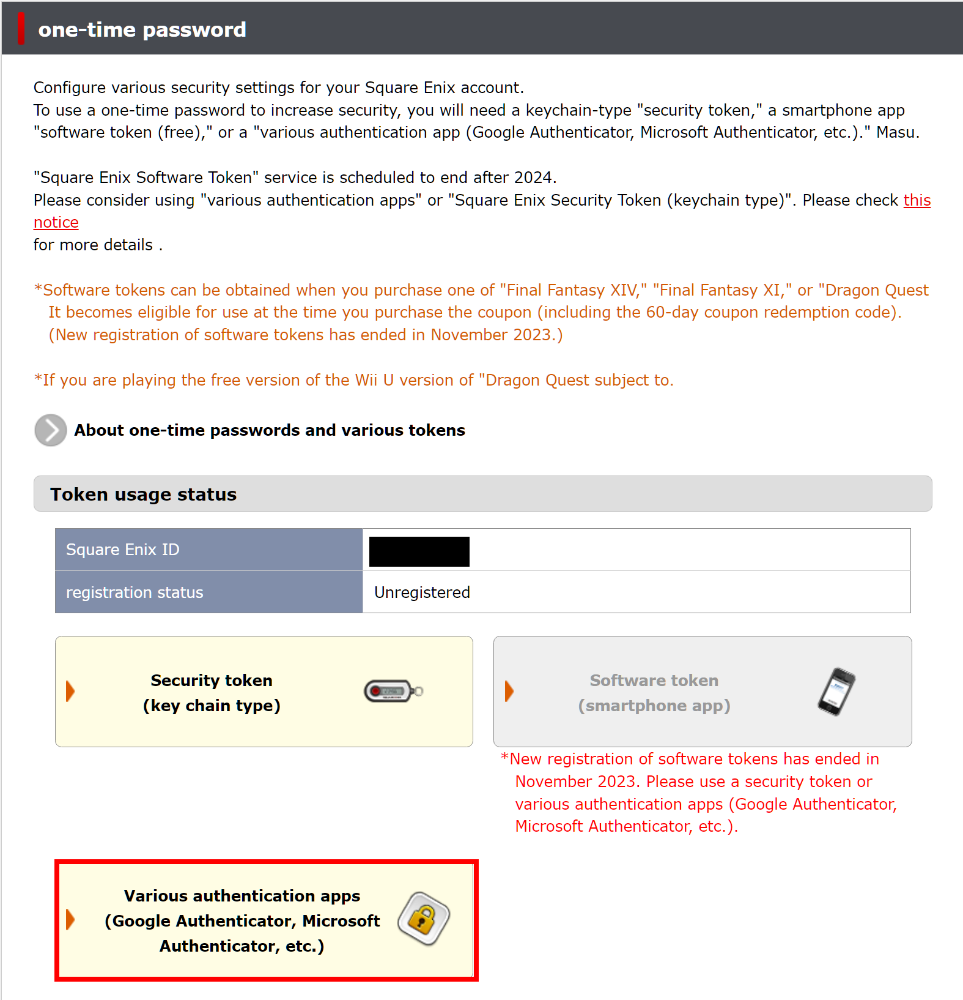

(Guide referenced from CrystalCreeper12)
There are a couple different reasons you might want to set up
OTP (One-Time-Password) for your Square Enix JP account.
Increased account security is always a plus, but setting up an
OTP is
very useful for VPN users as it will
stop your account getting flagged for suspicious
activity.
This guide will run you through the process of getting the
feature set up on your account.
Keep in mind that in order to set up this functionality on your
account, you're going to need an authentication app installed on
your smartphone, such as Google Authenticator.
Setting Up OTP (One-Time-Password)
The first thing we'll need to do is sign into our JP Square Enix account, using this link: (https://secure.square-enix.com/account/app/svc/otpTop) which will bring you to the familiar screen below. Sign in normally using the credentials of the account you want to add OTP to.
After logging in, you'll be greeted with the following screen. Click on the outlined button to continue.
This will bring you to a confirmation page. Go ahead and just click on the outlined button again to continue.

On this page, you will see a large QR code. Using the authentication app of your choice, scan the QR code with your camera to add it to the app. If that doesn't work, click the link under the QR code image for a PIN you can enter into the app instead of scanning. After adding your Square Enix account to your authentication app, click the highlighted "next" button at the bottom of the page.

Lastly, you'll want to enter the one time password currently displayed in your authentication app, then click the "next" button.

You'll see this confirmation page if the registration was successful. Clicking the confirmation button will log you out of your account. Your OTP setup is done!

This last step is not required, but strongly suggested in case you lose access to your authenticator app. Log back in to your Square Enix account's main page here, as shown below.
Your Emergency Removal Password will be displayed in red, and will allow you to easily remove your authenticator in the event you lose the app or your smartphone. If you do not do this and you lose access, your account may be permanently unrecoverable. Write this down and keep it somewhere safe and easily accessible!